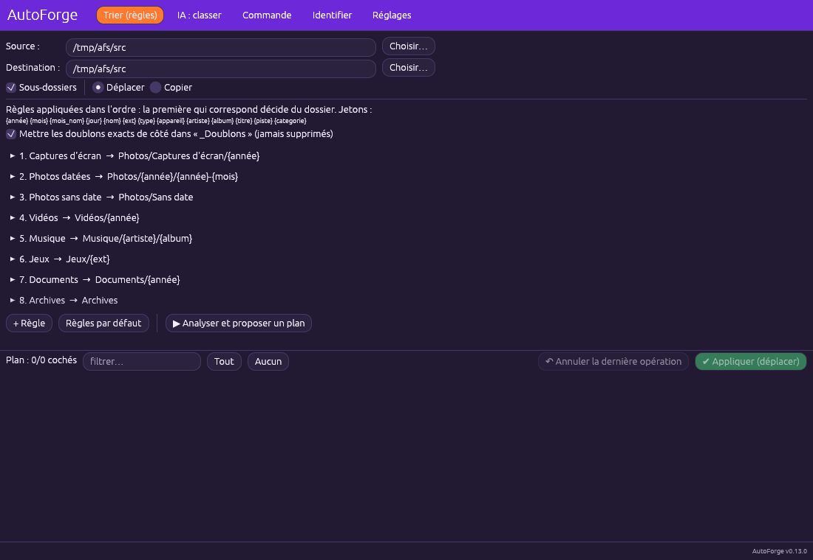
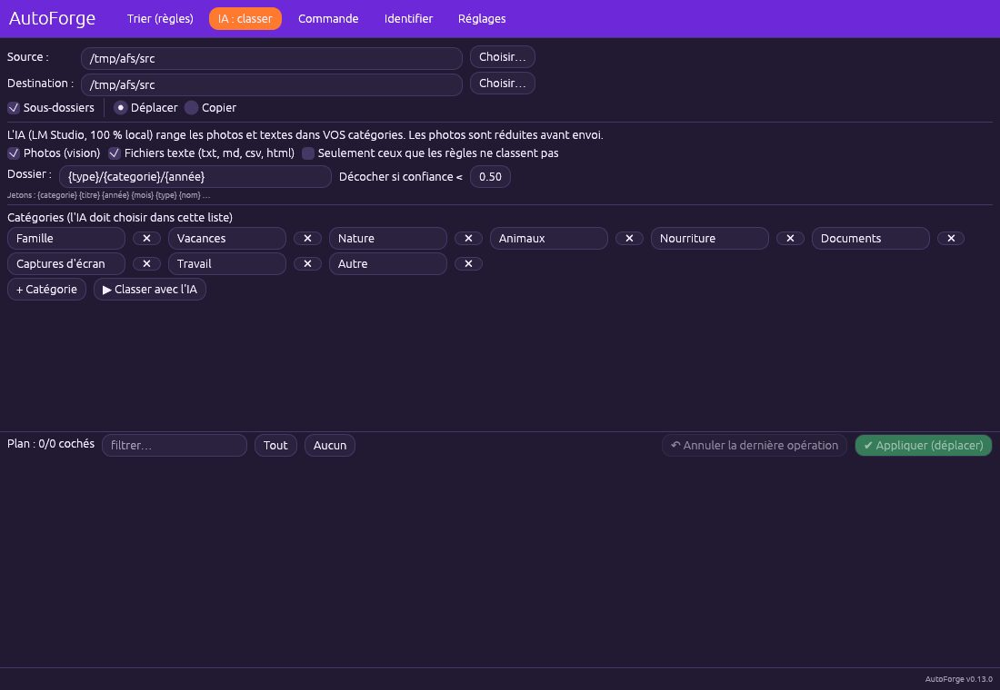
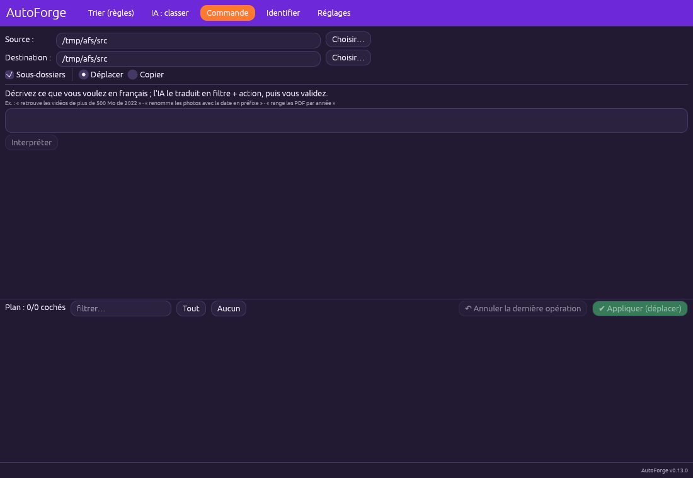
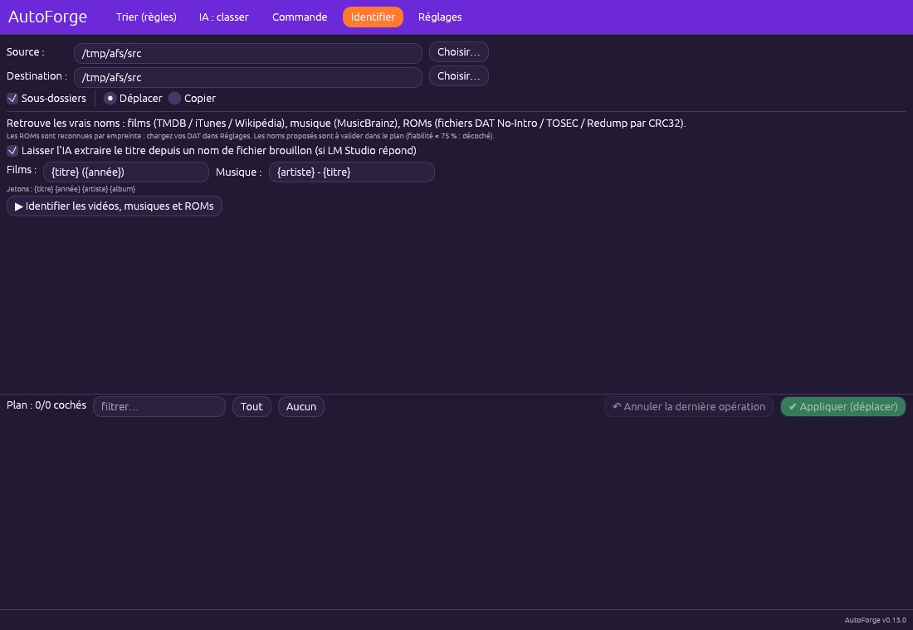
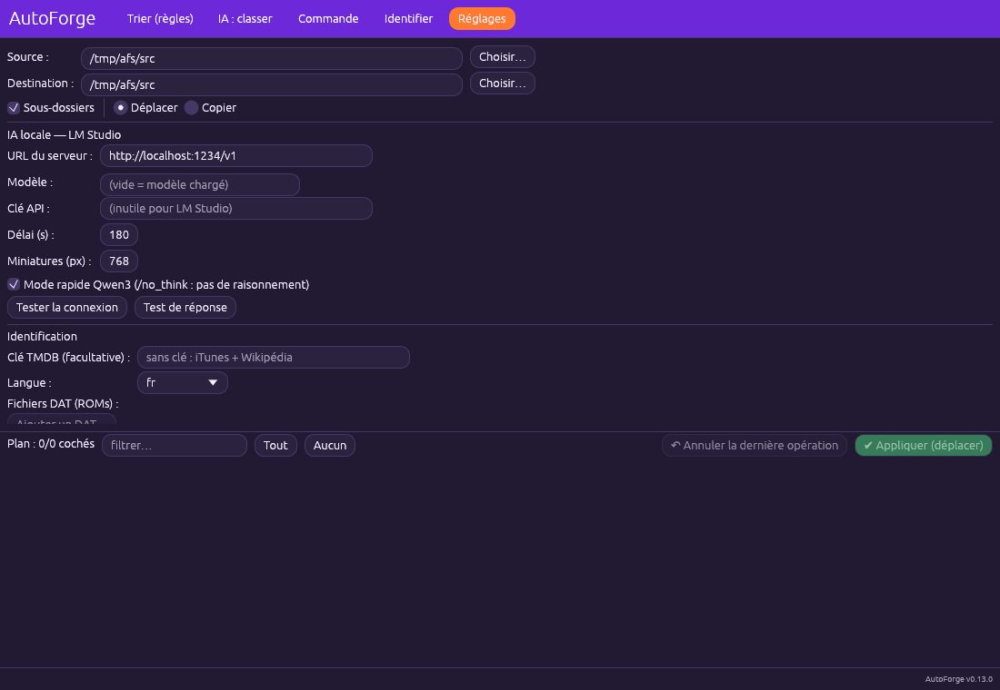

🪄 AutoForge
Tri automatique, IA locale et identification. AutoForge range, classe et renomme vos fichiers selon des règles, avec une IA locale optionnelle (LM Studio). Rien n'est modifié avant que vous ayez validé le plan.
Trier par règles #
Les règles sont appliquées dans l'ordre : la première qui correspond décide du dossier de destination. Les jetons {année} {mois} {type} {artiste} {album} {ext}… construisent l'arborescence.

- Choisissez Source et Destination, Sous-dossiers et Déplacer ou Copier.
- Ajustez les règles (Captures d'écran, Photos datées, Vidéos, Musique, Jeux, Documents, Archives…) ou cliquez sur Règles par défaut ; + Règle en ajoute.
- Cliquez sur Analyser et proposer un plan : le plan s'affiche sans rien modifier.
- Cochez/décochez, filtrez, puis Appliquer.
- Annuler la dernière opération remet les fichiers à leur place.
Classer avec l'IA locale #
Une IA tournant sur votre ordinateur (LM Studio) range photos et textes dans vos catégories. Rien n'est envoyé sur Internet.

- Réglez l'URL de LM Studio dans l'onglet Réglages et testez la connexion.
- Onglet IA : classer : cochez Photos (vision) et/ou Fichiers texte.
- Éditez la liste des Catégories (Famille, Vacances, Travail…) : l'IA doit choisir dans cette liste.
- Réglez le motif de dossier (
{type}/{catégorie}/{année}) et le seuil de confiance. - Classer avec l'IA, vérifiez le plan, appliquez.
Commandes en langage naturel #
Décrivez la tâche en français : l'IA la traduit en filtre + action, et vous validez le plan.

- Onglet Commande.
- Écrivez par exemple « retrouve les vidéos de plus de 500 Mo de 2022 ».
- Cliquez sur Interpréter, contrôlez le plan, appliquez.
Identifier films, musiques et ROMs #
AutoForge retrouve les vrais noms : films (TMDB / iTunes / Wikipédia), musique (MusicBrainz) et ROMs (fichiers DAT, empreinte CRC32).

- Onglet Identifier.
- Réglez le modèle Films (
{titre} ({année})) et Musique ({artiste} - {titre}). - Cochez « Laisser l'IA extraire le titre depuis un nom de fichier brouillon » si besoin.
- Identifier les vidéos, musiques et ROMs ; validez le plan (fiabilité < 75 % : décoché).
Réglages de l'IA et de l'identification #
Cet onglet configure le serveur d'IA et les sources d'identification.

- URL du serveur :
http://localhost:1234/v1pour LM Studio. - Modèle (vide = modèle chargé), délai, taille des miniatures.
- Tester la connexion puis Test de réponse.
- Identification : clé TMDB facultative, langue, fichiers DAT.